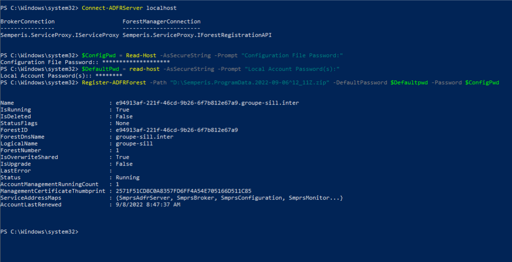
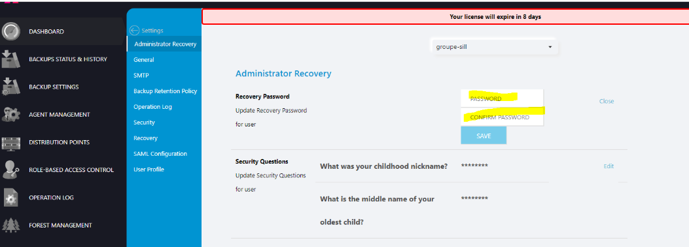
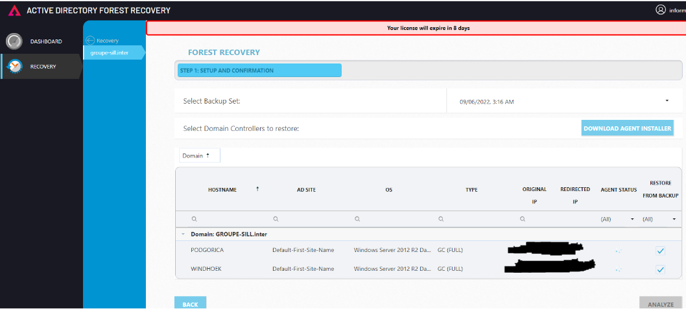

Contexte & Prérequis
Dans le cadre d'un Plan de Continuité d'Activité (PCA), j'ai déployé la solution Semperis ADFR pour assurer la restauration complète de la forêt Active Directory groupe-sill.inter en cas de compromission majeure (ex: Ransomware)[cite: 144, 145].
Environnement technique
- Serveur maître : Windows Server 2019 (Version anglaise)[cite: 5].
- Cibles (AD) : 2x VMs Windows Server 2012 R2[cite: 6].
- Base de données : SQL Server Express[cite: 42, 64].
Déroulement de l'intervention
1. Enregistrement de la Forêt (PowerShell)
Une fois l'installation du serveur Semperis et de son module PowerShell terminée, la première étape critique a été d'enregistrer la forêt AD. J'ai utilisé le cmdlet Register-ADFRForest en ciblant le fichier de sauvegarde de la configuration[cite: 161].
La forêt est ensuite passée à l'état "Registered" dans l'interface[cite: 164].

2. Sécurisation et Contrôle d'Accès (RBAC)
La sécurité de l'outil de restauration est vitale. Dans la section "Role-Based Access Control", j'ai mappé le compte local "Informatique" et lui ai attribué les permissions strictes d'ADFR Recovery Administrator[cite: 203, 240, 241]. J'ai également configuré les questions de sécurité pour l'accès de secours[cite: 268, 269].

3. Préparation et Lancement de la Restauration
Après avoir copié les fichiers de sauvegarde dans d:\backup[cite: 292], je me suis rendu dans le menu "Forest Recovery". La procédure a impliqué :
- Déploiement des agents : Installation de l'agent ADFR sur les 2 serveurs cibles[cite: 347].
- Redirection IP : Ajout de la nouvelle adresse IP dans la zone "Redirect IP"[cite: 360].
- Cohérence matérielle : Vérification de l'alignement des partitions (Disques C: et D: identiques à l'original) pour éviter les erreurs lors de la restauration[cite: 387, 388].
Une fois l'analyse validée, la reconstruction de l'Active Directory a été lancée via l'action "Start Restore"[cite: 390, 401].
